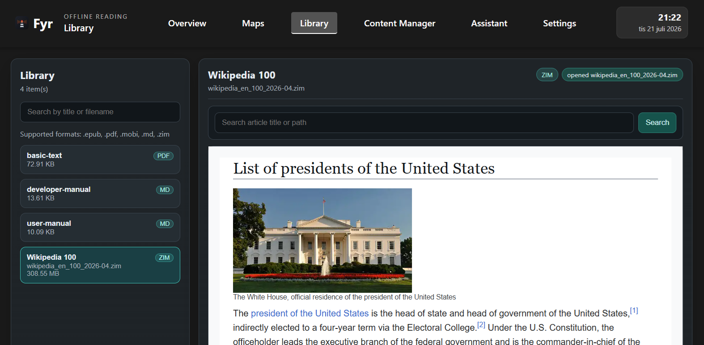
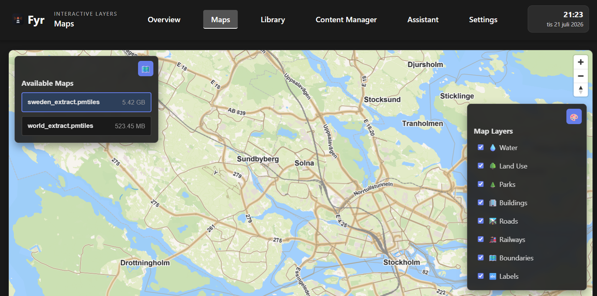

Fyr runs as a local web server for maps, books, AI, and knowledge archives. It works completely without internet once content is present — ideal for homes, field use, air-gapped networks, or low-bandwidth environments.
Access and manage a vast library of knowledge from a single local interface.
Render vector maps locally using PMTiles, with absolutely no external tile server required.
Read EPUB, PDF, Markdown, and natively parse ZIM files (Wikipedia & Kiwix-format) entirely on-device.
Load and chat with GGUF language models (like Qwen2.5) without sending a single byte of data to the cloud.
Fetch maps, books, AI models, POI data, and misc files from curated or custom sources directly via the UI.
Import local files, inspect the content inventory, manage roles (Open, Password-protected, or Read-only kiosks), and organize all assets in one place.
Native linux/arm64 support. Deploy Fyr on a Raspberry Pi and optionally turn it into a standalone Wi-Fi hotspot for fully off-grid access. See the guide →
Explore the clean local dashboard and workspace interfaces.


Already have Docker installed? Launch Fyr instantly with a single command.
docker run --rm -p 8080:8080 \
-e FYR_HOST=0.0.0.0 \
-e DATA_DIR=/data \
-v fyr-data:/data \
hexagon/fyr:latestOpen http://localhost:8080 in your browser to begin.
This guide serves as the authoritative reference for deploying Fyr. Choose the path that fits your specific hardware and environment requirements.
Use this path for a fast, repeatable deployment on Linux, macOS, or Windows.
docker run --rm -p 8080:8080 \
-e FYR_HOST=0.0.0.0 \
-e DATA_DIR=/data \
-v fyr-data:/data \
hexagon/fyr:latestdocker run --rm -p 8080:8080 \
-e FYR_HOST=0.0.0.0 \
-e DATA_DIR=/data \
-v fyr-data:/data \
hexagon/fyr:devhttp://localhost:8080 on the same machine, or http://<host-or-device-ip>:8080 from another device.-v fyr-data:/data to persist maps, books, models, and downloads.hexagon/fyr:dev is for testing and validation; use hexagon/fyr:latest for production.Fyr keeps user data only in DATA_DIR (/data in Docker examples). Reuse the same mount target on every run to keep data between container replacements.
Host folder bind-mount (direct host access):
docker run --rm -p 8080:8080 \
-e FYR_HOST=0.0.0.0 \
-e DATA_DIR=/data \
-v /path/to/fyr-data:/data \
hexagon/fyr:latestWindows PowerShell bind-mount example:
docker run --rm -p 8080:8080 `
-e FYR_HOST=0.0.0.0 `
-e DATA_DIR=/data `
-v C:\fyr-data:/data `
hexagon/fyr:latest⚠️ Note on Bind Mount Permissions & UID 1000
When using a host folder bind-mount (e.g., -v /path/to/fyr-data:/data), file permission issues can occur if the host directory ownership does not match the container's execution user (typically UID 1000). If Fyr encounters permission denied errors when writing downloads or user data, ensure the host directory is owned by the correct user or fix it using:
sudo chown -R 1000:1000 /path/to/fyr-data
Use this path when you want to develop Fyr or run local code changes.
1. Build frontend assets:
cd crates/ui/frontend
npm ci
npm run build
cd ../../..2. Build backend binary:
cargo build --release -p server --bin fyr3. Run Fyr:
./target/release/fyrNote: For Windows PowerShell use .\target\release\fyr.exe
Optional Runtime Overrides:
DATA_DIR (default ./public/data)FYR_HOST (default 127.0.0.1; use 0.0.0.0 for Docker/LAN access)FYR_PORT (default 8080)Use this path to deploy Fyr on a clean Raspberry Pi. Fyr images natively support linux/arm64, which matches Raspberry Pi 64-bit OS perfectly.
Flash Raspberry Pi OS 64-bit (Bookworm recommended) using Raspberry Pi Imager. Boot and update packages:
sudo apt update
sudo apt full-upgrade -y
sudo rebootAfter reboot: sudo apt update
curl -fsSL https://get.docker.com | sh
sudo usermod -aG docker $USER
newgrp docker
docker --versionOnce Docker is installed, follow Option A above to run Fyr — the same Docker commands and environment variable overrides apply.
To start Fyr automatically on every boot:
docker run -d --restart unless-stopped --name fyr \
-p 8080:8080 \
-e FYR_HOST=0.0.0.0 \
-e DATA_DIR=/data \
-v fyr-data:/data \
hexagon/fyr:latestTurn your Raspberry Pi into a standalone Wi-Fi hotspot so phones, tablets, and laptops can connect directly to Fyr — no existing router or internet connection required. This is ideal for field use, classrooms, or off-grid deployments.
nmcli) is the default and is used below.Create the hotspot (replace Fyr and offline-fyr with your preferred SSID and password):
sudo nmcli device wifi hotspot \
ifname wlan0 \
con-name fyr-hotspot \
ssid "Fyr" \
password "offline-fyr"Enable the hotspot to start automatically on every boot:
sudo nmcli connection modify fyr-hotspot connection.autoconnect yes
sudo nmcli connection modify fyr-hotspot connection.autoconnect-priority 10Bring it up immediately without rebooting:
sudo nmcli connection up fyr-hotspotOnce devices connect to the Fyr Wi-Fi network, they can reach Fyr at http://10.42.0.1:8080 (the default hotspot gateway address assigned by NetworkManager).
💡 Tip: Sharing an Ethernet Connection
If the Raspberry Pi is also connected via Ethernet (eth0), NetworkManager will automatically share that connection through the hotspot, giving connected devices internet access when available.
docker ps (if running in Docker) shows the Fyr container as running./api/status on your target host and port.DATA_DIR location is writable by the system.8080 is not blocked by a firewall or occupied by another service.Fyr's complete User Manual and Developer Guide are hosted on GitHub.